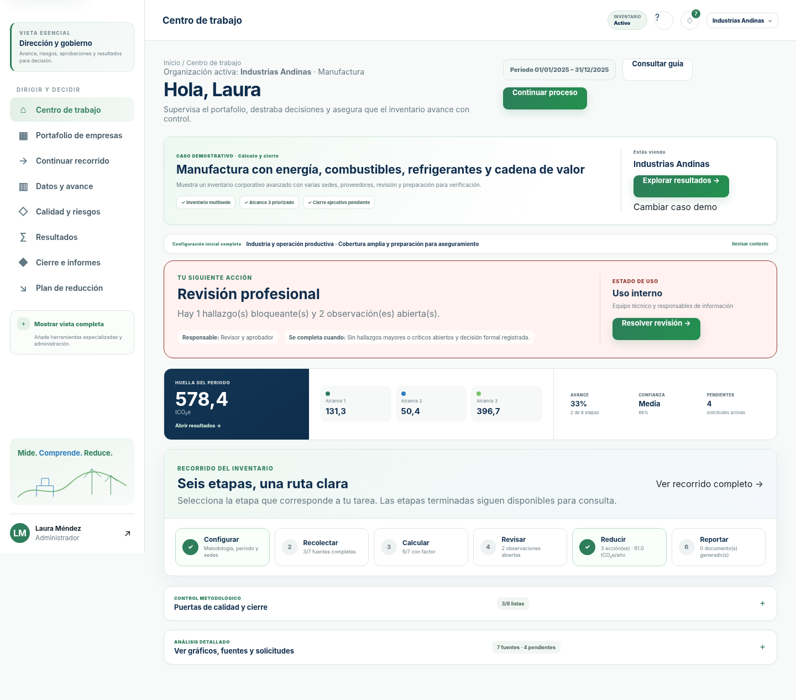
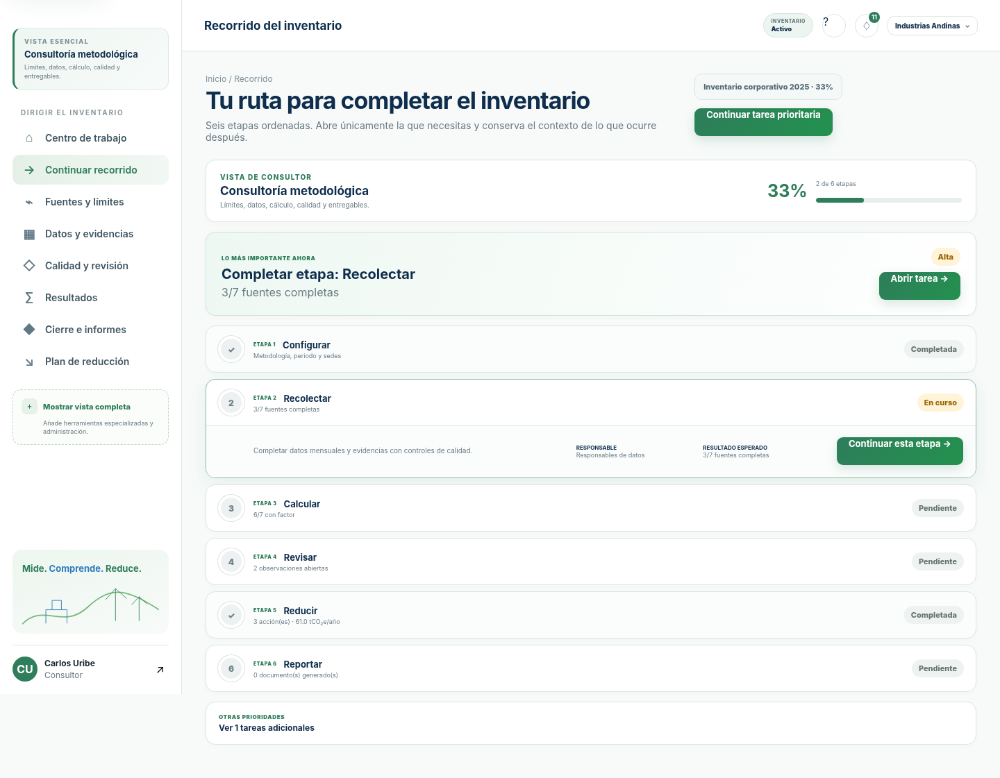
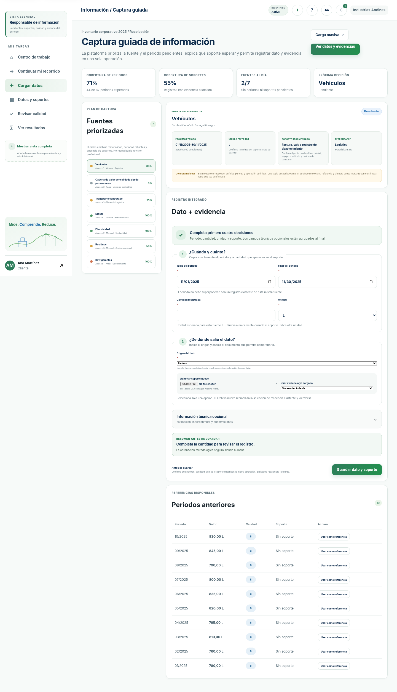
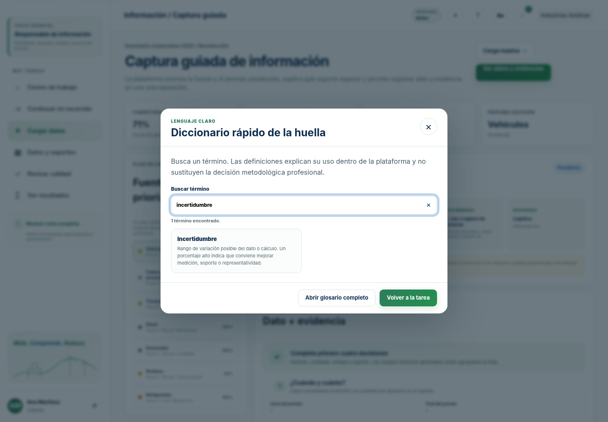

Siguiente acción:
instalaciones
fuentes
registros
avance
Plataforma profesional para inventarios corporativos, Alcance 3, factores de emisión, evidencia, revisión, informes y reducción.
Vista previa estática: esta página demuestra la experiencia. El cálculo persistente, los usuarios y la base de datos funcionan en la aplicación backend.
Selecciona una empresa para observar cómo cambia el contexto operativo.
Siguiente acción:
Datos esenciales primero; controles técnicos disponibles cuando aportan valor.
Unidades, GWP, factores, incertidumbre y trazabilidad bajo controles explícitos.
Solicitudes, hallazgos, documentos, segregación de roles y cadena de auditoría.
Informes, escenarios, proyectos, huella de producto y portafolio de acciones.



